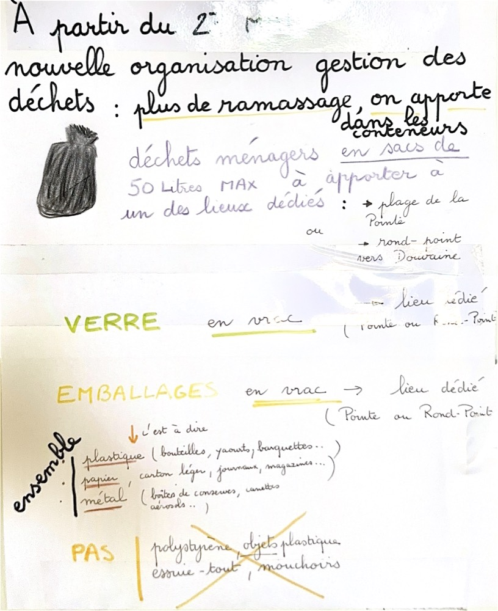

Nouvelle organisation : plus de ramassage à domicile. Tout se dépose désormais dans les conteneurs des lieux dédiés.
Ménagers Déchets ménagers
En sacs de 50 litres maximum, à apporter à l'un des lieux dédiés.
📍 Plage de la Pointe
📍 Rond-point vers Douvaine
Verre Verre
En vrac → lieu dédié (Pointe ou Rond-Point).
Emballages Emballages
En vrac → lieu dédié (Pointe ou Rond-Point). Tout ensemble, c'est-à-dire :
- 🧴 Plastique — bouteilles, pots de yaourt, barquettes…
- 📰 Papier / carton léger — journaux, magazines…
- 🥫 Métal — boîtes de conserve, canettes, aérosols…
À éviter À NE PAS mettre
- 🚫 Polystyrène
- 🚫 Objets en plastique (non-emballages)
- 🚫 Essuie-tout
- 🚫 Mouchoirs
📷 Voir la note originale
